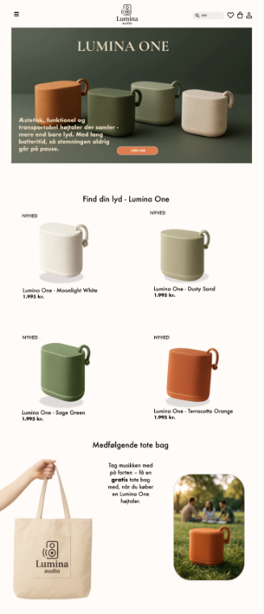
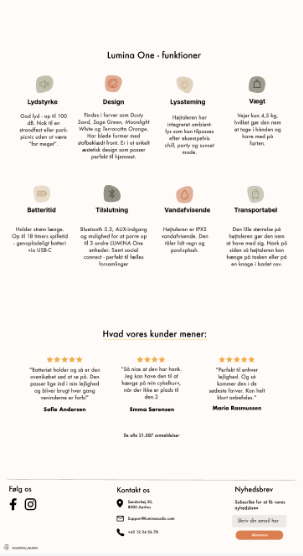
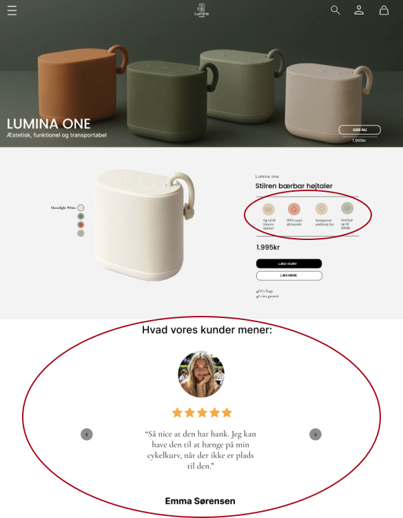
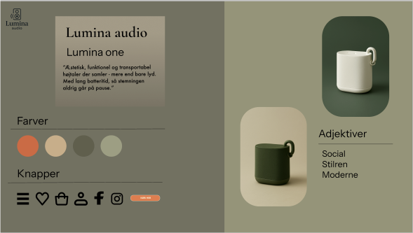
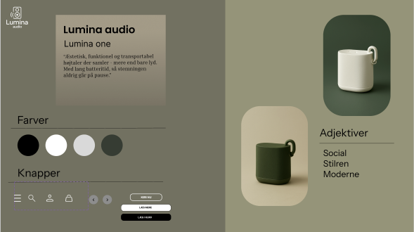

Projekt
LUMINA
ONE
Prøv min prototype
01. Landingpage
Denne case er bygget op om det fiktive brand “Lumina Audio”. Vi skulle lave vores første landingpage til dette brand og fremhæve deres ene produkt, højtaleren Lumina One som er lavet til at være let, smuk og social. På billedet her kan man se, hvordan den landingpage endte med at se ud på daværende tidspunkt



02. Forbedringer
Senere arbejdede jeg med at forbedre denne landingpage og gøre den til en interaktiv prototype fremfor bare et design. Her arbejdede jeg bl.a. med forskellige UX/UI laws for at optimere mit design og gøre siden mere brugervenlig. Noget af det jeg fokuserede på var at få rykket social proof længere op på siden og vise højttalerens funktioner på en mere simpel måde.
03. Æstetik og stil
I arbejdet med designets overordnede stil valgte jeg at lave den mere minimalistisk og konsistent. Det gjorde jeg på baggrund af ønsker fra vores persona og generelle UX/UI best practice regler. I et generelt aspekt jeg at lave designet mere overskueligt, så det giver brugeren frihed på deres rejse gennem siden. Ikonerne og knapper lavede jeg mere konsistente og så satte jeg mere fokus på CTA på forskellige steder på siden.

